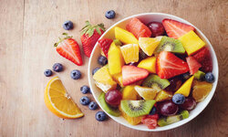

Fructe
Fructele sunt bogate in fibre, vitamine si minerale si au putine calorii. Acestea sunt o alegere excelenta pentru cei care vor sa piarda in greutate.

Legume
Legumele sunt foarte nutritive si contin putine calorii. Acestea pot fi consumate fie crude, fie gatite si pot fi o alegere excelenta pentru un stil de viata sanatos.
Oua
Ouale sunt bogate in proteine si pot fi consumate in diverse feluri. Acestea sunt o alegere excelenta pentru micul dejun si pot ajuta la reducerea poftei de mancare.
Nuci si seminte
Nucile si semintele sunt bogate in grasimi sanatoase si fibre si pot ajuta la reducerea nivelului de colesterol si la imbunatatirea sanatatii inimii.